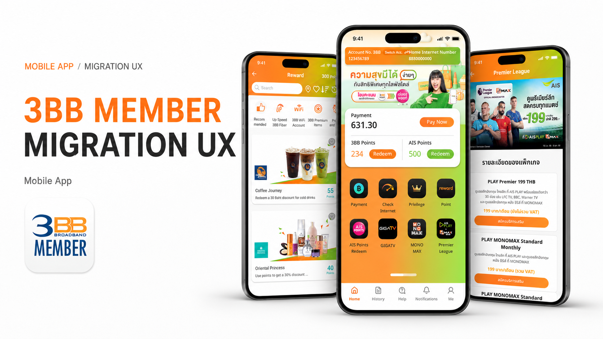
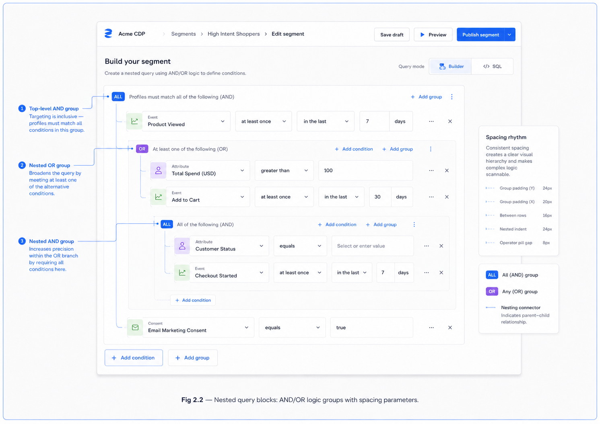
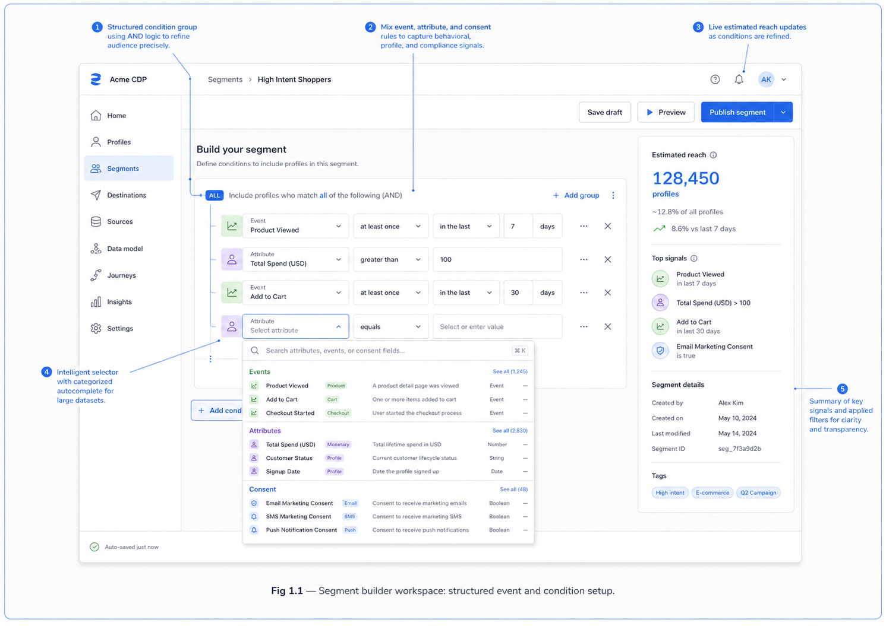

3BB Member
A live app for millions, inside a design file where years of versions stacked on top of each other — the job was finding which screen was real, then updating only the flows the AIS migration actually changed.
OutcomeLive on the Play Store & App Store; migration-critical flows handed off dev- and QA-ready.

The setup
3BB Member already had an app. Millions of users on Play Store and App Store.
Billing, packages, service access, account management — established flows that people used every day without thinking.
I didn't redesign the product. I worked inside a shared design file that held years of flows, versions, archived pages, and migration-era decisions stacked on top of each other.
The first problem wasn't design. It was figuring out which screen was the real one.
What was locked
- Established user journeys - members already knew the app. Unnecessary redesign could confuse routine tasks.
- A large inherited file — previous versions, migration sets, archived sections all living together.
- Migration-state complexity — same screen, different behavior depending on customer group.
- Phased delivery — flows had to hold together mid-transition, not just in a final-state mockup.
What I actually did
Map current vs. legacy before touching anything
The file contained years of accumulated work. Not every screen needed updating — most didn't. But no one had clearly marked which flow was intended and which was leftover.
I separated active states from inherited content, then updated only where migration logic, service state, or implementation requirements actually changed the user's path.
Less visually dramatic. More stable, more shippable.
Part 1What's mine versus what's inherited — the screens and states selected for update, separated from the legacy context around them.

Treat errors and service changes as first-class screens
Login errors, registration conditions, billing options — these aren't edge cases. These are the moments where users feel the most uncertainty.
I added and refined specific states: login error handling, mobile OTP registration, auto-pay setup, and bill-delivery channel selection. Each state got clear copy, hierarchy, and a next action that QA and dev could implement consistently.
More screens to maintain. Fewer implementation gaps to argue about.
Part 2The updated flows themselves — home, package detail, and a login-error state prepared as a development-ready screen.

What I'd do differently
Map the inherited-vs-contribution boundary on day one. I found it eventually. But the time spent figuring out which screen was current and which was legacy could have been saved with an explicit audit upfront.
That clarity was worth more to the team than any single screen I delivered.
What it shipped
The migration-critical flows handed off as development- and QA-ready states — each with explicit copy, hierarchy, and a defined next action — and the working file was left with current screens clearly separated from the inherited content around them.